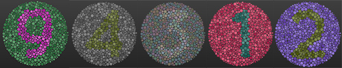
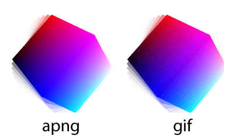

網頁環境基本檢測工具
- 瀏覽器 Java Script 功能異常
- 裝置日期時間:
- 瀏覽器 Cookies 功能:
- 瀏覽器名稱:
- 瀏覽器版本:
您的瀏覽器需要更新
- 瀏覽器引擎與版本:
- 作業系統:
- 微軟出品的瀏覽器:
- 是桌上型電腦:
- 觸控螢幕:
- 已開啟觸控功能:
- 行動裝置:
- 行動裝置名稱:
- 是 InApp Browser:
- Google CDN 被和諧:clear
- 黑體字顯示:碧筵綰趙錢孫李
- 是否支援 IconFont:
- 是否完整顯示 WebFont:
↑↓←→南去經三國，東來過五湖123國國國國Typesquare文鼎勘亭流AR Kantingliu B5 Ultra ↑↓←→
- 是否有調整瀏覽器字型設定:
- 是否有調整瀏覽器縮放倍率:
- 將會發生文字或網頁顯示異常、圖片模糊等情況。
- 螢幕解析度:*
- 視窗大小:*
- 網頁寬高:*
- 執行 Google Analytics:
- 螢幕是否調太亮:還有我看得到我嗎?
- 螢幕對比檢測:物產豐隆哆拉A夢
- 有啟用 Adblock 等擋廣告軟體:
- 圖片有被擋廣告軟體擋掉嗎?
- 從左到右的數字是?

- Flash:
- 螢幕解析度比例檢測:正圓形?
- 支援圖形格式:
- 會動嗎? 
- 來源網址:
- 彈跳視窗測試:第 1 種、第 2 種
- confirm 確認視窗功能測試:異常
- alert 提示視窗功能測試:異常
- IP位址:
- 地址位置:
國家 : 沒按允許或無法偵測,
縣市 : 沒按允許或無法偵測,
緯度 : 無法取得,
經度 : 無法取得
- UserAgent: